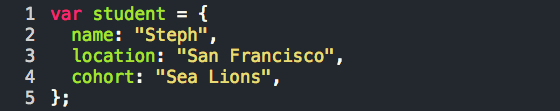
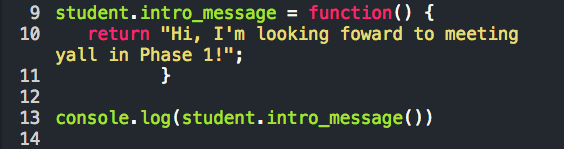
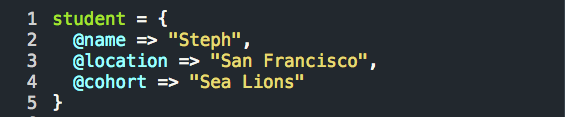

One of the fundamental differences in Ruby and JavaScript can be found when comparing JS's objects and Ruby's hashes. Though they are strikingly similar in their construct, you'll see the functionality is different as well as their overall scope within the program.
JavaScript objects are data structures that can be assigned unlimited properties. 
To add a property...
Unlike Ruby hashes, JavaScript allows you to take it a step further and make a property a function, since they are both objects. By adding (), the computer understands you want to call the name of the property you've created and execute it like a function. 
Ruby hashes are also data structures with unlimited properties. 
If you wanted to add a value...
In Ruby, hashes are custom objects we create separate from the method we create to modify them. Hashes are essentially static data points. In other words, we cannot create a key value pair that operates as a function as in JavaScript. This separation in Ruby, typically referred to as data encapsulation, requires additional code to help objects talk to each other. In JS, because the functions are part of the object itself, there is no restriction to the property data.